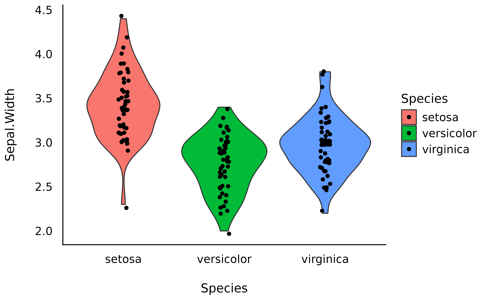
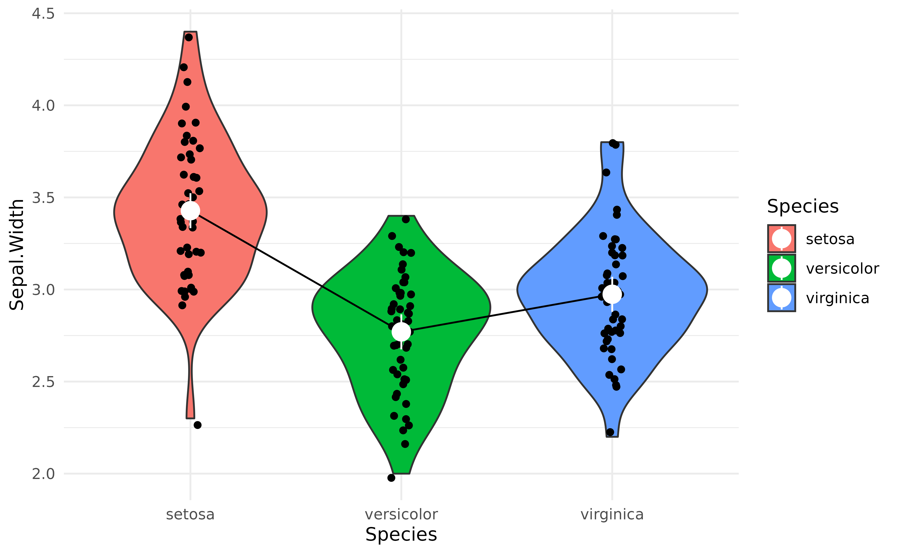

What are, why use and how to get marginal means
Source:vignettes/estimate_means.Rmd
estimate_means.RmdThis vignette will introduce the concept of marginal means.
Raw Means
The iris dataset, available in base R, contains observations of 3 types of iris flowers (the Species variable); Setosa, Versicolor and Virginica, for which different features were measured, such as the length and width of the sepals and petals.
A traditional starting point, when reporting such data, is to start by descriptive statistics. For instance, what is the mean Sepal.Width for each of the 3 species.
We can compute the means very easily by grouping the observations by species, and then computing the mean and the SD:
library(dplyr)
iris %>%
group_by(Species) %>%
summarise(
Mean_Sepal.Width = mean(Sepal.Width),
SD_Sepal.Width = sd(Sepal.Width)
)> # A tibble: 3 x 3
> Species Mean_Sepal.Width SD_Sepal.Width
> <fct> <dbl> <dbl>
> 1 setosa 3.43 0.379
> 2 versicolor 2.77 0.314
> 3 virginica 2.97 0.322We can also provide a plot:
library(ggplot2)
library(see)
ggplot(iris, aes(x = Species, y = Sepal.Width, fill = Species)) +
geom_violin() +
geom_jitter2(width = 0.05) +
theme_modern()
However, these raw means might be biased, as the number of observations in each group might be different. Moreover, there might be some hidden covariance or mediation with other variables in the dataset, creating a “spurious” influence on the means.
How can we take these influences into account while calculating means?
Marginal Means
Another way of analysing the means is to actually statistically model them, rather than simply describe them as they appear in the data. For instance, we could fit a simple Bayesian linear regression modelling the relationship between Species and Sepal.Width.
Marginal means are basically means extracted from a statistical model, and represent average of response variable (here, Sepal.Width) for each level of predictor variable (here, Species).
library(modelbased)
model <- lm(Sepal.Width ~ Species, data = iris)
means <- estimate_means(model)
means> Estimated Marginal Means
>
> Species | Mean | SE | 95% CI
> ---------------------------------------
> setosa | 3.43 | 0.05 | [3.33, 3.52]
> versicolor | 2.77 | 0.05 | [2.68, 2.86]
> virginica | 2.97 | 0.05 | [2.88, 3.07]
>
> Marginal means estimated for SpeciesNote that the means computed here are not that different than the raw means we created above. From which we can surmise that there are not many spurious influences that we need to worry about in the iris dataset. But this might not be the case for your dataset.
We can now add these means, as well as the credible interval (CI) representing the uncertainty of the estimation, as an overlay on the previous plot:
ggplot(iris, aes(x = Species, y = Sepal.Width, fill = Species)) +
geom_violin() +
geom_jitter2(width = 0.05, alpha = 0.5) +
geom_line(data = means, aes(y = Mean, group = 1), size = 1) +
geom_pointrange(data = means,
aes(y = Mean, ymin = CI_low, ymax = CI_high),
size = 1,
color = "white") +
theme_modern()
Complex Models
The power of marginal means resides in the fact that they can be estimated from much more complex models. For instance, we could fit a model that takes into account the interaction with the other variable, Petal.Width. The estimated means will be “adjusted” (or will take into account) for variations of these other components.
model <- lm(Sepal.Width ~ Species * Petal.Width, data = iris)
means_complex <- estimate_means(model)
means_complex> Estimated Marginal Means
>
> Species | Mean | SE | 95% CI
> ---------------------------------------
> setosa | 4.23 | 0.39 | [3.45, 5.00]
> versicolor | 2.64 | 0.05 | [2.54, 2.74]
> virginica | 2.45 | 0.14 | [2.18, 2.72]
>
> Marginal means estimated for SpeciesNow let’s plot the marginal means from the simple linear model (shown in white dots) we saw above and the marginal means from the more complex model (shown in yellow dots) next to each other, which should help us notice how the adjusted means change depending on the predictors.
ggplot(iris, aes(x = Species, y = Sepal.Width, fill = Species)) +
geom_violin() +
geom_jitter2(width = 0.05, alpha = 0.5) +
geom_line(data = means, aes(y = Mean, group = 1), size = 1, alpha = 0.25) +
geom_pointrange(data = means,
aes(y = Mean, ymin = CI_low, ymax = CI_high),
size = 1,
color = "white") +
geom_line(data = means_complex, aes(y = Mean, group = 1), size = 1) +
geom_pointrange(data = means_complex,
aes(y = Mean, ymin = CI_low, ymax = CI_high),
size = 1,
color = "orange") +
theme_modern()
That’s interesting! It seems that after adjusting the model for petal characteristics, the differences between Species seems to be even bigger!
But are these differences “significant”?
That’s where the contrast analysis comes into play! Click here to read the tutorial on contrast analysis.